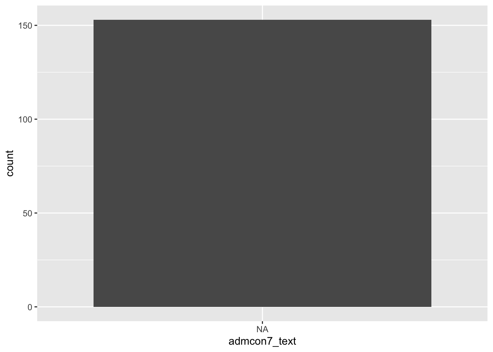

library(tidyverse)
library(rscorecard)
sc_key(Sys.getenv("SCORECARD_KEY")) # Replace Sys.getenv("SCORECARD_KEY") here with your API Key in quotation marks
scorecard <- sc_init() %>%
sc_year(2018) %>% #Note how we are looking at only 2021 data here!
sc_filter(stabbr == "MA") %>% #Note how we are looking at only Massachusetts data here!
sc_select(unitid, instnm, city, highdeg, control, ugds, adm_rate, costt4_a, costt4_p, pcip27, pctfloan, admcon7, wdraw_orig_yr2_rt, cdr3) %>%
sc_get()Lab 1: Understanding Datasets
Setting Up Your Environment
Install the RScorecard package by entering the following into your Console:
install.packages("rscorecard")Create a Scorecard API Key at this link. Shortly after you fill out the form, you will be emailed a key. Copy that key into code chunk below, replacing all of the following text in
sc_key(): Sys.getenv(“SCORECARD_KEY”). Be sure to wrap the key in quotation marks.Download the Scorecard Data Dictionary and Technical Documentation for Institution-Level Data Files here.
Run the code below to the import 2018 Scorecard data for Massachusetts into
R. Call me or one of the data assistants over if you get an error.
Exercise 1
See if you can identify a unique key for this dataset. Write some lines of code to determine whether the column you’ve identified can act as unique key for the data. Hint: You need to check whether the values in the column ever repeat.
# Write code to check if values in column are all unique here.
Exercise 2
At this point, you’ve probably figured out that each row in this dataset is a higher education institution. …but there are many different ways that we can define higher education institutions, and that will impact what gets included and excluded in our data. Referencing the Technical Documentation, locate a definition for the unit of observation in this dataset. What institutions are included, and what institutions are excluded? Summarize a definition below.
Exercise 3
For each of the variable names in the scorecard data frame, look up the associated name in the data dictionary. You will need to search for the variable name in the sixth column of the data dictionary (I recommend using Ctrl-F to quickly locate the variable name in the spreadsheet.) Once you’ve found the variable name, reference column 1 to determine what this variable means, and reference columns 7 and 8 to see what possible values will appear in that column.
Identify one nominal variable, one ordinal variable, one discrete variable, and one continuous variable in scorecard and list their variable names below. Then uncomment the lines below and use the typeof() function to see how R determined their data types. Did any surprise you?
#typeof(scorecard$_____)
#typeof(scorecard$_____)
#typeof(scorecard$_____)
#typeof(scorecard$_____)
Exercise 4
Write code below to recode the admcon7 variable and store the results in a new variable in scorecard called admcon7_text. You’ll need to look up the values in the data dictionary. If you’ve done this correctly, running this code should produce a barplot that displays multiple bars.
scorecard$admcon7_text <-
recode(
scorecard$admcon7,
#Fill replacements here
.default = NA_character_
)
ggplot(scorecard, aes(x = admcon7_text)) +
geom_bar()
Exercise 5
Calculate the number of missing values in both the costt4_a and the costt4_p columns. Reference the NOTES column in the data dictionary to determine why there are so many NA values in these columns. Add a comment to the code chunk below, explaining the reason for missing values in these columns.
# Calculate the number of NA values here
# Add comment to explain missing values here